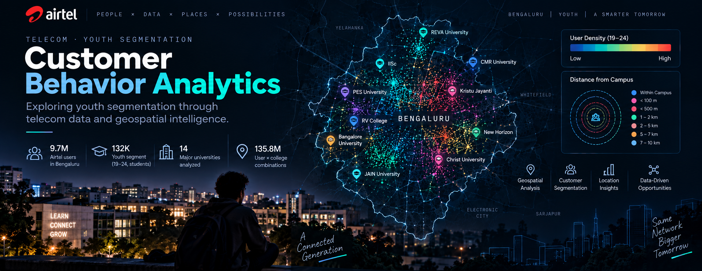

September 2026
Exploring Youth Segmentation Through Telecom Data
A research-driven approach to identifying student clusters in Bengaluru using telecom data, geospatial analysis, and distance-based segmentation.
Read the post ↗